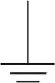
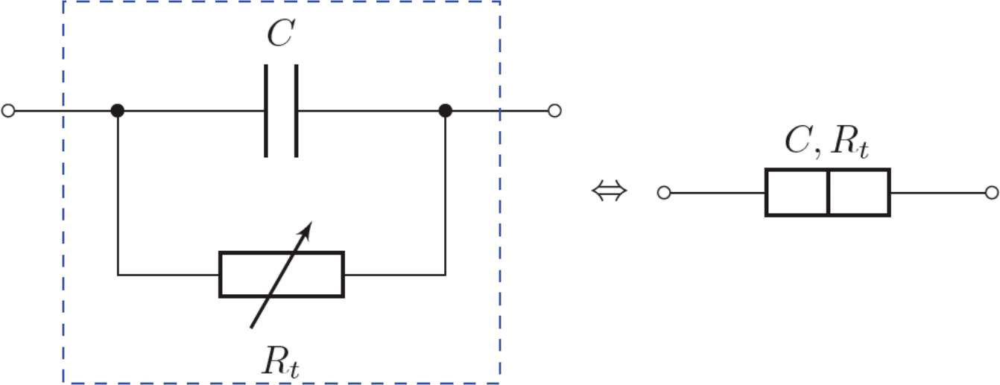
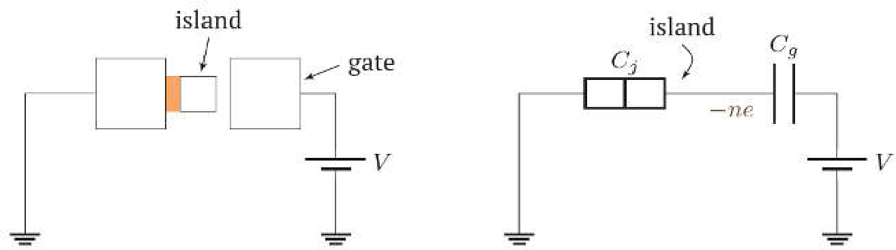
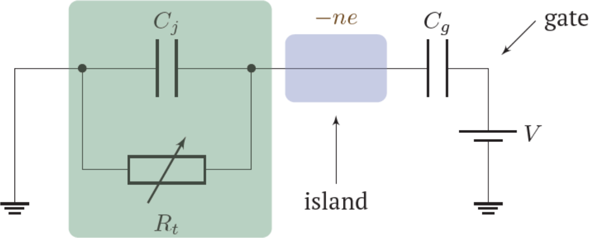
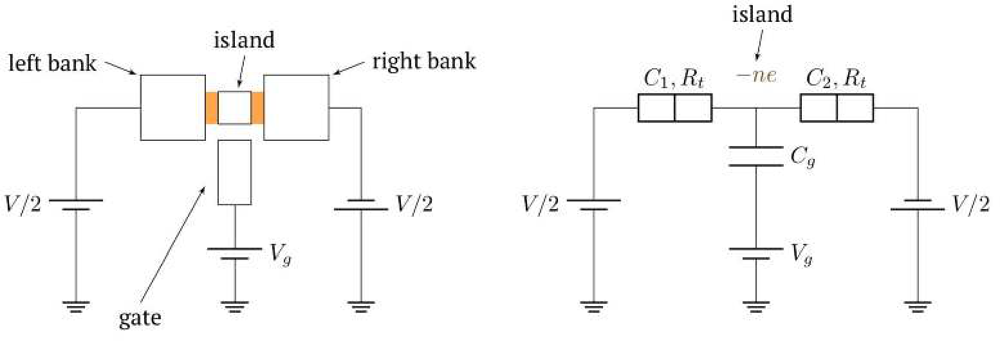
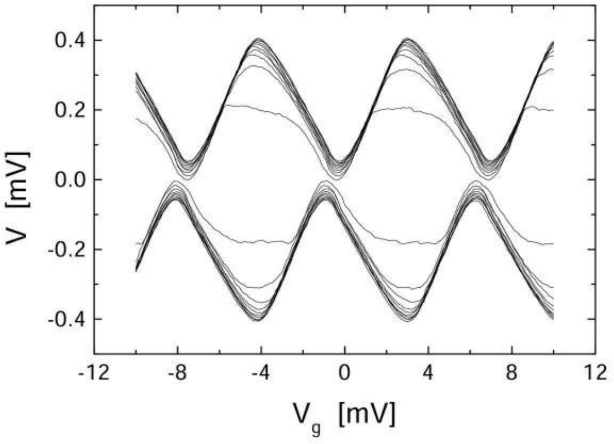

이 문제의 모든 부분에서 기본 전하 $e = 1.6\times10^{-19}~\mathrm{C}$가 답에 나타날 수 있다.
단전자 트랜지스터(single‑electron transistor)는 저온(수 켈빈 정도)에서 관측되는 쿨롱 봉쇄(Coulomb blockade) 현상에 기반하여 작동하는 전자 부품이다. 이 문제에서는 이 효과를 조사하고 0 K에서 단전자 트랜지스터의 작동 원리를 설명한다.
참고: 전기 회로에서 “접지(ground)”는 전위가 0으로 정의되는 점을 가리킨다. “접지” 기호는 그림에 나와 있다.

Part A. 터널 효과 (3.0점)
쿨롱 봉쇄 현상은 근본적으로 터널링(tunneling), 즉 터널 효과에 기반한다. 그 본질은 특정 조건에서 계가 퍼텐셜 에너지 장벽을 넘을 수 있다는 데 있다. 터널링은 최종 에너지가 초기 에너지를 초과하지 않을 때 가능하다. 초과 에너지는 열로 방출된다.
터널링은 터널 접합(tunnel junction)의 두 판 사이에서 개별 기본 전하가 순차적으로 이동하는 것으로 이루어진다. 이 계의 “고전적” 모형에서, 전자 수송은 축전기와 병렬로 연결된 저항 $R_t$를 통해 일어난다. 에너지는 저항에서 소산된다. 저항은 터널링이 에너지적으로 허용될 때 유한하고, 그렇지 않을 때 무한대가 된다.
이후, 터널 접합의 전하 또는 에너지는 축전기의 전하 또는 에너지를 의미한다.

터널 접합 회로(왼쪽)와 전기 회로도에서의 기호(오른쪽)
전원에서 분리된 터널 접합을 생각하자.
A.1
(터널 접합의 등가 회로에서) 정전용량 $C$인 축전기의 판이 전자 전하 $n$개와 같은 전하를 가질 때의 에너지에 대한 표현식을 쓰라. 이제 값 $n$이 1만큼 증가한다고 하자. 축전기 에너지의 변화 $\Delta W$는 무엇인가?
0.1점
이후로는 다른 소자들과 함께 전기 회로에 연결된 터널 접합을 생각한다. 회로도에서 터널 접합은 맞닿은 두 직사각형으로 표시된다.
단전자 상자
단전자 상자(single‑electron box)는 일렬로 정렬된 세 전극으로 이루어진 계이다. 중앙 전극을 섬(island)이라 하고, 양옆 전극을 뱅크(bank)라 한다. 섬에는 $n$개의 전자가 들어 있으며, 이 수는 터널링 사건을 통해 변할 수 있다. $n$은 양수일 수도 음수일 수도 있음에 유의하라(섬의 전자 과잉 또는 부족을 나타냄).
섬과 왼쪽 뱅크 사이에는 정전용량 $C_j$인 터널 접합이 있고, 섬과 오른쪽 뱅크는 정전용량 $C_g$인 보통의 축전기를 이룬다. 이 구성에서 오른쪽 뱅크를 게이트(gate)라 한다. 뱅크 사이에는 일정한 전위차 $V$가 유지된다. 모든 부품 매개변수를 명시한 대응 전기 회로도가 그림에 나와 있다.

단전자 상자터널링이 에너지적으로 허용될 때의 “고전적” 모형 (터널링 허용)

터널링이 에너지적으로 금지될 때의 “고전적” 모형 (터널링 금지)
A.2
축전기와 터널 접합 위의 전하 $q_g$와 $q_j$에 대한 표현식을 유도하라. 축전기와 터널 접합의 정전용량은 각각 $C_g$와 $C_j$, 전원 전압은 $V$, 섬 위의 전자 수는 $n$이다.
0.3점
A.3
섬 위의 전자 수 $n$이 1만큼 증가할 때, 축전기와 터널 접합으로 이루어진 계의 에너지 변화에 대한 표현식을 유도하라. 답을 $n$, $C_g$, $C = C_j + C_g$로 표현하라.
0.3점
A.4
한 전자가 섬으로 터널링할 때(섬 전자 수 $n$이 1만큼 증가하는 것에 해당) 전원이 한 일 $A$와 회로에서의 열 소산 $Q$에 대한 표현식을 유도하라. 답을 $n$, $C_g$, $C$, $V$로 표현하라.
0.5점
이후로는 회로에서 소산된 열 $Q$가 0보다 클 때 터널링이 허용되는 것으로 간주한다.
A.5
열 $Q$가 터널 저항 $R_t$를 통한 전류 흐름 동안 소산된다고 가정하라. 한 전자가 섬으로 터널링하는 동안 $R_t$를 통한 전류 $I_t$에 대한 표현식을 유도하라. 또한 이 표현식이 유효한 $n$에 대한 제약(즉 터널링이 에너지적으로 허용될 때)을 명시하라. 답을 $n$, $C_g$, $C$, $V$, $R_t$로 표현하라.
0.5점
A.6
터널링이 에너지적으로 허용된다고 가정하고, 전원을 통해 흐르는 전류 $I$를 터널 전류 $I_t$로 표현하라. 양의 전류 방향은 전원의 음극 단자 쪽이다. 표현식에는 양 $C_g$, $C$, $V$도 포함될 수 있다. 섬의 전자 수가 증가하는 경우와 감소하는 경우 모두에 해당하는 과정을 고려하라.
0.3점
A.7
$n = 0$과 $n = 1$에 대한 $I(V)$ 특성을 하나의 그래프에 그려라. 모든 특징적인 양상을 포착할 수 있도록 충분히 넓은 전압 범위에 걸쳐 의존성을 표시하라.
1.0점
Part B. 단전자 트랜지스터 (4.5점)
단전자 트랜지스터는 두 뱅크에 터널 접합으로 연결된 섬과, 섬과 축전기를 이루는 게이트로 구성된다. 게이트는 순수하게 용량성으로 결합되어 있다(저항이 무한대). 왼쪽 뱅크에 전압 $+V/2$가, 오른쪽 뱅크에 전압 $-V/2$가 가해진다. 전자 부품의 매개변수를 명시한 트랜지스터의 회로도와 등가 회로가 그림에 나와 있다.

단전자 트랜지스터
B.1
섬에 $n$개의 전자가 들어 있다고 하자. 섬의 전위 $\varphi$를 $n$, $V$, $V_g$, $C_1$, $C_2$, $C_g$로 표현하라.
0.2점
B.2
한 전자가 왼쪽(첫 번째) 뱅크에서 섬으로 터널링하는 동안 전원들이 한 총 일에 대한 표현식을 유도하라. 답을 $V$, $V_g$, $C_1$, $C_2$, $C_g$로 표현하라.
1.0점
B.3
섬에 $n$개의 전자가 들어 있다고 하자. 한 전자가 왼쪽(첫 번째) 뱅크에서 섬으로 터널링하는 동안 회로에서 소산된 총 열을 표현하라. 답을 $n$, $V$, $V_g$, $C_1$, $C_2$, $C_g$로 표현하라.
1.0점
B.4
왼쪽 뱅크에서 섬으로 터널링하는 동안 열 소산이 양이 되는 것에 대응하는 $V$에 대한 조건(부등식)을 유도하라. 답을 $n$, $V$, $V_g$, $C_g$, $C_2$로 표현하라.
0.3점
B.5
오른쪽 뱅크에서 섬으로 터널링하는 경우, 그리고 섬에서 두 뱅크로 터널링하는 경우에 대해 질문 B4와 유사한 $V$에 대한 조건을 유도하라. 충분한 시간이 지난 후 섬에 $n$개의 전자가 존재하는 것에 대응하는 영역의 도표를 그려라. 도표는 $V$ 대 $V_g$ 축에 그려야 한다. 각 영역에 대해 도표 위에 $n$ 값을 명시하라.
1.5점
$(V, V_g)$ 도표에서, 충분한 시간이 지난 후 단 두 전이만 에너지적으로 허용되는 영역들을 생각하자: 한 접합을 통한 $n\to n+1$과 다른 접합을 통한 $n+1\to n$. 이 경우 한 뱅크에서 다른 뱅크로 섬을 통해 정상 전류가 흐른다. 이제 그 크기를 결정한다.
한 쌍의 터널링 사건 후 섬의 전하가 변하지 않으므로, 축전기들 위의 전하도 일정하게 유지된다. 따라서 결과 전류는 첫째와 둘째 접합을 통한 터널링 시간의 합으로 결정된다.
B.6
터널 접합들이 동일하다고 가정하라: 각각 정전용량 $C_1$과 터널 저항 $R_t$를 갖는다. 충분한 시간이 지난 후 섬에 $n = 0$과 $n = 1$개의 전자 상태만 가능한 전압 쌍 $(V_g, V)$를 생각하라. 회로에서 터널 전류 $I(V_g, V)$의 크기를 결정하라. 양의 전류 방향은 왼쪽 뱅크에서 오른쪽 뱅크 쪽이다.
0.5점
Part C. 유한 온도에서의 터널링 (2.5점)
C.1
그래프는 저온 $T = 10~\mathrm{mK}$에서 고정된 전류 값 $I\approx 1~\mathrm{pA}$에 대해 측정한 실험적 $V(V_g)$ 의존성을 보여준다. Part B에서 얻은 결과에 기반하여 정전용량 $C_1 = C_2$와 $C_g$를 결정하라.
0.5점

V. A. Krupenin et al., 2001
고정된 양의 온도 $T$를 생각하자. $\Gamma^{(i)}_{n\to n\pm1}$을 $i$번째 접합을 통해 섬으로/섬에서 터널링하는 단위 시간당 확률(rate)이라 하고, $p(n)$을 섬에 $n$개의 전자가 있을 확률이라 하자.
참고: 어떤 과정의 비율이 $\Gamma$이면, 시간 $dt$ 동안 그것이 일어날 확률은 $dp = \Gamma\,dt$이다.
C.2
$\Gamma_{n\to n\pm1} = \Gamma^{(1)}_{n\to n\pm1} + \Gamma^{(2)}_{n\to n\pm1}$이라 하자. 전자는 어느 뱅크로든 터널링할 수 있다. 섬에 $n$개의 전자가 있을 확률의 시간 도함수 $dp(n)/dt$를 확률 $p(n)$, $p(n\pm1)$과 비율 $\Gamma_{n\to n\pm1}$, $\Gamma_{n\pm1\to n}$으로 표현하라.
0.3점
트랜지스터를 통한 정상 전류 흐름(모든 확률 $p(n)$이 일정함을 의미)을 살펴볼 것이다. 또한 그 너머로는 터널링이 멈추는 섬 위 전자의 임계 수 $n_0$이 존재한다고 가정한다: $n > n_0$에 대해 $p(n) = 0$이고 $\Gamma_{n-1\to n} = 0$이다.
C.3
명시된 가정과 확립된 경계 조건으로부터, $p(n)$과 $p(n+1)$을 연결하는 관계를 $p(n+1) = A\cdot p(n)$ 형태로 유도하라. 여기서 $A$는 여러 $m$에 대한 비율 $\Gamma_{m\to m\pm1}$만 포함하는 표현식이다.
0.5점
저온($kT\ll e^2/C$)과 작은 전압($|V|\ll e/C$, $|V_g - e/2C_g|\ll e/C_g$)을 생각한다. 양자역학에 따르면, $i$번째 접합을 통해 섬으로/섬에서 터널링하는 단위 시간당 비율의 일반적 형태는 다음과 같다.
트랜지스터를 통한 전류에 대한 표현식을 쓰라. 답을 $\Gamma^{(i)}_{0\to1}$, $\Gamma^{(i)}_{1\to0}$으로 표현하라.
0.4점
열에 대한 표현식을 터널링 비율 $\Gamma^{(i)}_{n\to n\pm1}$의 공식에 대입하면, 방대한 계산 끝에 전류의 전압·온도 의존성이 얻어진다. 이 뚜렷한 의존성 덕분에 단전자 트랜지스터를 저온 측정 장치로 사용할 수 있으며, 이는 과학 축제 문제에서 탐구된다.